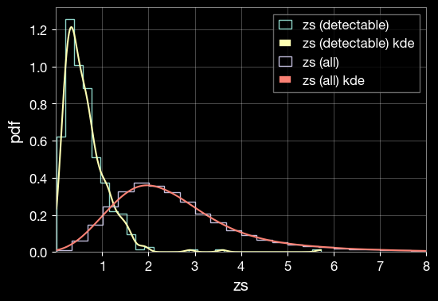
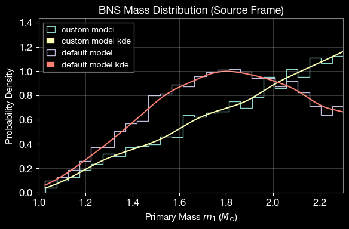
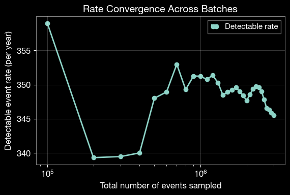
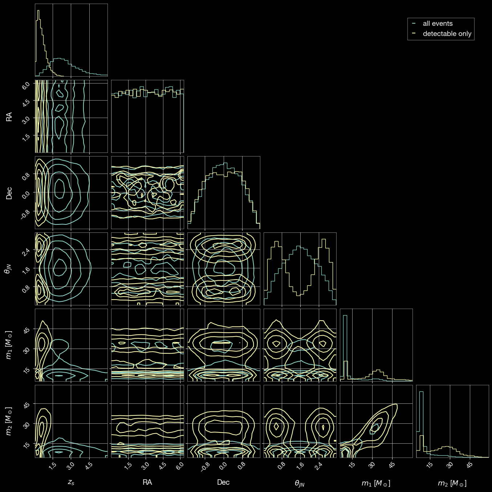
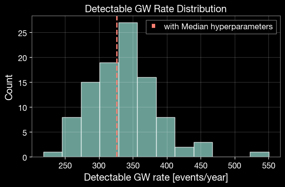
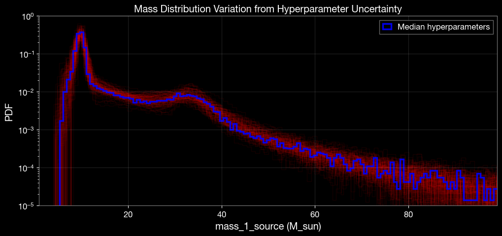

GWRATES complete example
This notebook is created by Phurailatpam Hemantakumar.
GWRATES is a comprehensive framework for simulating gravitational wave (GW) events and calculating their detection rates. This notebook provides a complete example of CBC event simulation and rate calculation.
Table of Contents
Part 1: Basic GW Event Simulation and Rate Calculation (BBH Example)
1.1 Initialize GWRATES
1.2 Simulate GW Population
1.3 Calculate Detection Rates
1.4 Inspect Generated Parameters
1.5 Access Saved Data Files
1.6 Load and Examine Saved Parameters
1.7 Examine Available Prior Functions
1.8 Visualize Parameter Distributions
Part 2: Custom Functions and Parameters
2.1 Define Custom Source Frame Masses
2.2 Define Event Type with Non-Spinning Configuration
2.3 Define Custom Merger Rate Density
2.4 Define Custom Detection Criteria
2.5 Initialize GWRATES with Custom Settings
2.6 Sample GW Parameters with Custom Settings
2.7 Calculate Rates with Custom Settings
2.8 Compare Default and Custom Mass Distributions
Part 3: Advanced Sampling - Generating Detectable Events
3.1 Initialize GWRATES for N-Event Sampling
3.2 Sample Until N Detectable Events Are Found
3.3 Analyze Rate Convergence
3.4 Assess Rate Stability
3.5 Overlapping plot between the all sampled and detectable event parameters
Part 4: Model Uncertainty Consideration
4.1 Median Hyperparameter Run
4.2 Hyperparameter Posterior Propagation
4.3 Visualize Rate and Mass Uncertainty
Part 1: Basic GW Event Simulation and Rate Calculation (BBH Example)
This section demonstrates a quick example to simulate binary black hole mergers and calculate their detection rates.
1.1 Initialize GWRATES
The GWRATES class is the main interface for simulating GW events and calculating rates. By default, it uses: - Event type: BBH (Binary Black Hole) - Detectors: H1, L1, V1 (LIGO Hanford, LIGO Livingston, Virgo) with O4 design sensitivity
All outputs will be saved in the ./ler_data directory.
[1]:
# Import the GWRATES class from the ler package
from ler.rates import GWRATES
import numpy as np
import matplotlib.pyplot as plt
# Initialize GWRATES with default settings
# use this gwsnr's input args if you want SNR values in the output, besides the boolean detection probability values. This will increase the output dictionary size and the runtime of the code. For details, refer to https://gwsnr.hemantaph.com/examples/pdet_generation.html.:
# pdet_kwargs=dict(snr_th=10.0, snr_th_net=10.0, pdet_type="boolean", distribution_type="noncentral_chi2", include_optimal_snr=True, include_observed_snr=True)
ler = GWRATES(verbose=True)
Initializing GWRATES class...
Initializing CBCSourceRedshiftDistribution class...
luminosity_distance interpolator will be loaded from ./interpolator_json/luminosity_distance/luminosity_distance_0.json
differential_comoving_volume interpolator will be loaded from ./interpolator_json/differential_comoving_volume/differential_comoving_volume_0.json
using ler available merger rate density model: merger_rate_density_madau_dickinson_belczynski_ng
merger_rate_density_madau_dickinson_belczynski_ng interpolator will be loaded from ./interpolator_json/merger_rate_density/merger_rate_density_madau_dickinson_belczynski_ng_0.json
merger_rate_density_madau_dickinson_belczynski_ng_detector_frame interpolator will be loaded from ./interpolator_json/merger_rate_density/merger_rate_density_madau_dickinson_belczynski_ng_detector_frame_1.json
merger_rate_density_based_source_redshift interpolator will be loaded from ./interpolator_json/merger_rate_density_based_source_redshift/merger_rate_density_based_source_redshift_0.json
Initializing CBCSourceParameterDistribution class...
using ler available zs function : merger_rate_density_based_source_redshift
using ler available mass_1_source function : broken_powerlaw_plus_2peaks
broken_powerlaw_plus_2peaks interpolator will be loaded from ./interpolator_json/mass_1_source/broken_powerlaw_plus_2peaks_0.json
using ler available mass_ratio function : powerlaw_with_smoothing
powerlaw_with_smoothing interpolator will be loaded from ./interpolator_json/mass_ratio/powerlaw_with_smoothing_0.json
No mass_2_source prior provided. mass_2_source = mass_1_source * mass_ratio
using ler available geocent_time function : uniform
using ler available ra function : uniform
using ler available dec function : sampler_cosine
using ler available phase function : uniform
using ler available psi function : uniform
using ler available theta_jn function : sampler_sine
using ler available a_1 function : uniform
using ler available a_2 function : uniform
No tilt_1 prior provided. tilt_1 prior will be set to None
No tilt_2 prior provided. tilt_2 prior will be set to None
No phi_12 prior provided. phi_12 prior will be set to None
No phi_jl prior provided. phi_jl prior will be set to None
Initializing GW parameter samplers...
Initializing GWSNR class...
psds not given. Choosing bilby's default psds
Interpolator will be loaded for L1 detector from ./interpolator_json/L1/partialSNR_dict_0.json
Interpolator will be loaded for H1 detector from ./interpolator_json/H1/partialSNR_dict_0.json
Interpolator will be loaded for V1 detector from ./interpolator_json/V1/partialSNR_dict_0.json
Chosen GWSNR initialization parameters:
npool: 4
snr type: interpolation_aligned_spins
waveform approximant: IMRPhenomD
sampling frequency: 2048.0
minimum frequency (fmin): 20.0
reference frequency (f_ref): 20.0
mtot=mass1+mass2
min(mtot): 1.0
max(mtot) (with the given fmin=20.0): 500.0
detectors: ['L1', 'H1', 'V1']
psds: [[array([ 10.21659, 10.23975, 10.26296, ..., 4972.81 ,
4984.081 , 4995.378 ], shape=(2736,)), array([4.43925574e-41, 4.22777986e-41, 4.02102594e-41, ...,
6.51153524e-46, 6.43165104e-46, 6.55252996e-46],
shape=(2736,)), <scipy.interpolate._interpolate.interp1d object at 0x121a5e9e0>], [array([ 10.21659, 10.23975, 10.26296, ..., 4972.81 ,
4984.081 , 4995.378 ], shape=(2736,)), array([4.43925574e-41, 4.22777986e-41, 4.02102594e-41, ...,
6.51153524e-46, 6.43165104e-46, 6.55252996e-46],
shape=(2736,)), <scipy.interpolate._interpolate.interp1d object at 0x121aaf430>], [array([ 10. , 10.02306 , 10.046173, ...,
9954.0389 , 9976.993 , 10000. ], shape=(3000,)), array([1.22674387e-42, 1.20400299e-42, 1.18169466e-42, ...,
1.51304203e-43, 1.52010157e-43, 1.52719372e-43],
shape=(3000,)), <scipy.interpolate._interpolate.interp1d object at 0x1214253b0>]]
#----------------------------------------
# GWRATES initialization input arguments:
#----------------------------------------
# GWRATES set up input arguments:
npool = 4,
z_min = 0.0,
z_max = 10.0,
event_type = 'BBH',
cosmology = LambdaCDM(H0=70.0 km / (Mpc s), Om0=0.3, Ode0=0.7, Tcmb0=0.0 K, Neff=3.04, m_nu=None, Ob0=0.0),
pdet_finder = <bound method GWSNR.pdet of <gwsnr.core.gwsnr.GWSNR object at 0x116882710>>,
json_file_names = dict(
gwrates_params = 'gwrates_params.json',
gw_param = 'gw_param.json',
gw_param_detectable = 'gw_param_detectable.json',
),
interpolator_directory = './interpolator_json',
ler_directory = './ler_data',
# GWRATES also takes other CBCSourceParameterDistribution class input arguments as kwargs, as follows:
gw_priors = dict(
zs = 'merger_rate_density_based_source_redshift',
mass_1_source = 'broken_powerlaw_plus_2peaks',
mass_ratio = 'powerlaw_with_smoothing',
mass_2_source = None,
geocent_time = 'uniform',
ra = 'uniform',
dec = 'sampler_cosine',
phase = 'uniform',
psi = 'uniform',
theta_jn = 'sampler_sine',
a_1 = 'uniform',
a_2 = 'uniform',
tilt_1 = None,
tilt_2 = None,
phi_12 = None,
phi_jl = None,
),
gw_priors_params = dict(
zs = None,
mass_1_source = {'param_name': 'mass_1_source', 'sampler_type': 'broken_powerlaw_plus_2peaks', 'lam_0': 0.361, 'lam_1': 0.586, 'mpp_1': 9.764, 'sigpp_1': 0.649, 'mpp_2': 32.763, 'sigpp_2': 3.918, 'mlow_1': 5.059, 'delta_m_1': 4.321, 'break_mass': 35.622, 'alpha_1': 1.728, 'alpha_2': 4.512, 'mmax': 300.0, 'normalization_size': 500},
mass_ratio = {'param_name': 'mass_ratio', 'sampler_type': 'powerlaw_with_smoothing', 'q_min': 0.01, 'q_max': 1.0, 'mlow_2': 3.551, 'mmax': 300.0, 'beta': 1.171, 'delta_m': 4.91, 'mmin': 3.551},
mass_2_source = None,
geocent_time = {'param_name': 'geocent_time', 'sampler_type': 'uniform', 'x_min': 1238166018, 'x_max': 1269702018},
ra = {'param_name': 'ra', 'sampler_type': 'uniform', 'x_min': 0.0, 'x_max': 6.283185307179586},
dec = {'param_name': 'dec', 'sampler_type': 'sampler_cosine', 'x_min': -1.5707963267948966, 'x_max': 1.5707963267948966},
phase = {'param_name': 'phase', 'sampler_type': 'uniform', 'x_min': 0.0, 'x_max': 6.283185307179586},
psi = {'param_name': 'psi', 'sampler_type': 'uniform', 'x_min': 0.0, 'x_max': 3.141592653589793},
theta_jn = {'param_name': 'theta_jn', 'sampler_type': 'sampler_sine', 'x_min': 0.0, 'x_max': 3.141592653589793},
a_1 = {'param_name': 'a_1', 'sampler_type': 'uniform', 'x_min': -1.0, 'x_max': 1.0},
a_2 = {'param_name': 'a_2', 'sampler_type': 'uniform', 'x_min': -1.0, 'x_max': 1.0},
tilt_1 = None,
tilt_2 = None,
phi_12 = None,
phi_jl = None,
),
spin_zero = False,
spin_precession = False,
# GWRATES also takes other gwsnr.GWSNR input arguments as kwargs, as follows:
npool = 4,
snr_method = 'interpolation_aligned_spins',
snr_type = 'optimal_snr',
gwsnr_verbose = True,
multiprocessing_verbose = True,
pdet_kwargs = dict(
snr_th = 10.0,
snr_th_net = 10.0,
pdet_type = 'boolean',
distribution_type = 'noncentral_chi2',
include_optimal_snr = False,
include_observed_snr = False,
),
mtot_min = 1.0,
mtot_max = 500.0,
ratio_min = 0.1,
ratio_max = 1.0,
spin_max = 0.99,
mtot_resolution = 200,
ratio_resolution = 20,
spin_resolution = 10,
batch_size_interpolation = 1000000,
interpolator_dir = './interpolator_json',
create_new_interpolator = False,
sampling_frequency = 2048.0,
waveform_approximant = 'IMRPhenomD',
frequency_domain_source_model = 'lal_binary_black_hole',
minimum_frequency = 20.0,
reference_frequency = None,
duration_max = None,
duration_min = None,
fixed_duration = None,
mtot_cut = False,
psds = None,
ifos = None,
noise_realization = None,
ann_path_dict = None,
snr_recalculation = False,
snr_recalculation_range = [6, 14],
snr_recalculation_waveform_approximant = 'IMRPhenomXPHM',
psds_list = [[array([ 10.21659, 10.23975, 10.26296, ..., 4972.81 ,
4984.081 , 4995.378 ], shape=(2736,)), array([4.43925574e-41, 4.22777986e-41, 4.02102594e-41, ...,
6.51153524e-46, 6.43165104e-46, 6.55252996e-46],
shape=(2736,)), <scipy.interpolate._interpolate.interp1d object at 0x121a5e9e0>], [array([ 10.21659, 10.23975, 10.26296, ..., 4972.81 ,
4984.081 , 4995.378 ], shape=(2736,)), array([4.43925574e-41, 4.22777986e-41, 4.02102594e-41, ...,
6.51153524e-46, 6.43165104e-46, 6.55252996e-46],
shape=(2736,)), <scipy.interpolate._interpolate.interp1d object at 0x121aaf430>], [array([ 10. , 10.02306 , 10.046173, ...,
9954.0389 , 9976.993 , 10000. ], shape=(3000,)), array([1.22674387e-42, 1.20400299e-42, 1.18169466e-42, ...,
1.51304203e-43, 1.52010157e-43, 1.52719372e-43],
shape=(3000,)), <scipy.interpolate._interpolate.interp1d object at 0x1214253b0>]],
To print all initialization input arguments, use:
ler._print_all_init_args()
Note : Alternate (important) possible gwsnr input arguments for the
GWRATESclass initialization. Refer togwsnrDocumentation for more details on the input arguments.
ler = GWRATES(
# if you want SNR values in the output, besides the boolean detection probability values
pdet_kwargs=dict(
snr_th=10.0,
snr_th_net=10.0,
pdet_type="boolean",
distribution_type="noncentral_chi2", # or 'fixed_snr' if you want to use optimal_snr values, instead of observed_snr values, in pdet calculation.
include_optimal_snr=True,
include_observed_snr=True)
# if you want to use spin precessing waveforms
waveform_approximant = 'IMRPhenomXPHM',
snr_recalculation = True,
snr_recalculation_range = [6, 14],
snr_recalculation_waveform_approximant = 'IMRPhenomXPHM',
# ler settings to access spin precessing GW parameters
spin_zero = False,
spin_precession=True,
)
1.2 Simulate GW Population
Generate a population of Compact Binary Coalescence (CBC) events. This step: - Samples intrinsic (masses and spins) and extrinsic (redshift, sky location, inclination angle, etc.) GW parameters from initialized priors - Calculates the probability of detection (Pdet) for each event based on detector network sensitivity - Stores the output in ./ler_data/gw_param.json
Parameters: - size: Total number of events to sample - batch_size: Events per batch (useful for resuming interrupted simulations) - resume: If True (default), resume from last saved batch; if False, start fresh - save_batch: If True, save after each batch; if False (default), save only at the end
Note: For realistic results, use size >= 1,000,000 with batch_size = 100,000
[2]:
# Simulate 100,000 GW events in batches of 50,000
gw_param_all = ler.gw_cbc_statistics(100000, resume=False)
# # with all input args
# gw_param_all = ler.gw_cbc_statistics(size=100000, batch_size=50000, resume=True, save_batch=False, output_jsonfile='gw_param.json')
print(f"\nTotal events simulated: {len(gw_param_all['zs'])}")
print(f"Sampled redshift values: {gw_param_all['zs'][:5]}")
Simulated GW params will be stored in ./ler_data/gw_param.json
removing ./ler_data/gw_param.json if it exists
Batch no. 1
sampling gw source params...
calculating pdet...
Batch no. 2
sampling gw source params...
calculating pdet...
saving all gw parameters in ./ler_data/gw_param.json
Total events simulated: 100000
Sampled redshift values: [1.90218238 2.86449212 1.9142129 4.65725558 1.29739929]
1.3 Calculate Detection Rates
Select detectable events and calculate the detection rate. This function: - Filters events using a Pdet threshold. By default, Pdet is based on observed SNR > 10, where the observed SNR follows a non-central chi-squared distribution centered at the optimal SNR. - Returns the rate in detectable events per year. - Saves detectable events to ./ler_data/gw_param_detectable.json.
[3]:
# Calculate the detection rate and extract detectable events
detectable_rate, gw_param_detectable = ler.gw_rate()
print(f"\n=== Detection Rate Summary ===")
print(f"Detectable event rate: {detectable_rate:.2e} events per year")
print(f"Total event rate: {ler.normalization_pdf_z:.2e} events per year")
print(f"Percentage fraction of the detectable events: {detectable_rate/ler.normalization_pdf_z*100:.2e}%")
Getting gw parameters from json file ./ler_data/gw_param.json...
total GW event rate (yr^-1): 355.34514219975864
number of simulated GW detectable events: 388
number of simulated all GW events: 100000
storing detectable params in ./ler_data/gw_param_detectable.json
=== Detection Rate Summary ===
Detectable event rate: 3.55e+02 events per year
Total event rate: 9.16e+04 events per year
Percentage fraction of the detectable events: 3.88e-01%
Note : rate calculation considers 100% duty cycle for all detectors in the network for a span of 1 year.
1.4 Inspect Generated Parameters
View the available parameters in the generated event population.
[4]:
# List all parameters saved for detectable events
print("Detectable event parameters:")
print(list(gw_param_detectable.keys()))
print("\nExample values for mass_1_source (detector frame):")
print(gw_param_detectable['mass_1_source'][:5])
Detectable event parameters:
['zs', 'mass_1_source', 'mass_ratio', 'mass_2_source', 'geocent_time', 'ra', 'dec', 'phase', 'psi', 'theta_jn', 'a_1', 'a_2', 'luminosity_distance', 'mass_1', 'mass_2', 'pdet_L1', 'pdet_H1', 'pdet_V1', 'pdet_net']
Example values for mass_1_source (detector frame):
[35.35786944 57.10189932 29.35265561 18.8782851 36.36839126]
1.5 Access Saved Data Files
All simulation results are saved in JSON files for future reference and analysis.
[5]:
# View the directory structure and file names
print(f"Output directory: {ler.ler_directory}")
print(f"\nSaved JSON files:")
for key, filename in ler.json_file_names.items():
print(f" {key}: {filename}")
Output directory: ./ler_data
Saved JSON files:
gwrates_params: gwrates_params.json
gw_param: gw_param.json
gw_param_detectable: gw_param_detectable.json
1.6 Load and Examine Saved Parameters
Reload parameters from JSON files for further analysis.
[6]:
from ler.utils import get_param_from_json, load_json
# Load detectable parameters from file
gw_param_from_file = get_param_from_json(
ler.ler_directory + '/' + ler.json_file_names['gw_param_detectable']
)
print(f"Parameters loaded from file: {list(gw_param_from_file.keys())}")
# Load the initialization parameters and rates
gwrates_params = load_json(ler.ler_directory + '/gwrates_params.json')
print(f"\nDetectable event rate (from saved file): {gwrates_params['detectable_gw_rate_per_year']:.4e} per year")
Parameters loaded from file: ['zs', 'mass_1_source', 'mass_ratio', 'mass_2_source', 'geocent_time', 'ra', 'dec', 'phase', 'psi', 'theta_jn', 'a_1', 'a_2', 'luminosity_distance', 'mass_1', 'mass_2', 'pdet_L1', 'pdet_H1', 'pdet_V1', 'pdet_net']
Detectable event rate (from saved file): 3.5535e+02 per year
1.7 Visualize Parameter Distributions
Create KDE (Kernel Density Estimation) plots to compare the distributions of parameters between all simulated events and detectable events.
[7]:
import matplotlib.pyplot as plt
from ler.utils import plots as lerplt
# input param_dict can be either a dictionary or a json file name that contains the parameters
plt.figure(figsize=(6, 4))
lerplt.param_plot(
param_name='zs',
param_dict='ler_data/gw_param_detectable.json',
plot_label='zs (detectable)',
)
lerplt.param_plot(
param_name='zs',
param_dict='ler_data/gw_param.json',
plot_label='zs (all)',
)
plt.xlim(0.001,8)
plt.xlabel('zs')
plt.ylabel('pdf')
plt.grid(alpha=0.4)
plt.show()
getting gw_params from json file ler_data/gw_param_detectable.json...
getting gw_params from json file ler_data/gw_param.json...

1.8 Examine Available Prior Functions
There are two ways of accessing the built-in GW parameter prior functions and their default parameters.
1.8.1 Accessing functions as Class Attributes
[8]:
# Display all available GW prior sampler functions
print("Built-in GW parameter sampler functions and parameters:\n")
for func_name, func_params in ler.available_gw_prior.items():
print(f"{func_name}:")
if isinstance(func_params, dict):
for param_name, param_value in func_params.items():
print(f" {param_name}: {param_value}")
else:
print(f" {func_params}")
print()
Built-in GW parameter sampler functions and parameters:
zs:
merger_rate_density_based_source_redshift: None
mass_1_source:
broken_powerlaw_plus_2peaks: {'param_name': 'mass_1_source', 'sampler_type': 'broken_powerlaw_plus_2peaks', 'lam_0': 0.361, 'lam_1': 0.586, 'mpp_1': 9.764, 'sigpp_1': 0.649, 'mpp_2': 32.763, 'sigpp_2': 3.918, 'mlow_1': 5.059, 'delta_m_1': 4.321, 'break_mass': 35.622, 'alpha_1': 1.728, 'alpha_2': 4.512, 'mmax': 300.0, 'normalization_size': 500}
powerlaw_plus_peak: {'param_name': 'mass_1_source', 'sampler_type': 'powerlaw_plus_peak', 'mminbh': 4.98, 'mmaxbh': 112.5, 'alpha': 3.78, 'mu_g': 32.27, 'sigma_g': 3.88, 'lambda_peak': 0.03, 'delta_m': 4.8, 'normalization_size': 500}
truncated_normal: {'param_name': 'mass_1_source', 'sampler_type': 'truncated_normal', 'mu': 1.4, 'sigma': 0.68, 'x_min': 1.0, 'x_max': 2.5}
uniform: {'param_name': 'mass_1_source', 'sampler_type': 'uniform', 'x_min': 1.0, 'x_max': 2.5}
powerlaw: {'param_name': 'mass_1_source', 'sampler_type': 'powerlaw', 'x_min': 1.0, 'x_max': 2.5, 'alpha': 7.7}
bimodal: {'param_name': 'mass_1_source', 'sampler_type': 'bimodal', 'w': 0.643, 'muL': 1.352, 'sigmaL': 0.08, 'muR': 1.88, 'sigmaR': 0.3, 'mmin': 1.0, 'mmax': 2.3}
broken_powerlaw: {'mminbh': 26, 'mmaxbh': 125, 'alpha_1': 6.75, 'alpha_2': 6.75, 'b': 0.5, 'delta_m': 5}
mass_ratio:
powerlaw_with_smoothing: {'param_name': 'mass_ratio', 'sampler_type': 'powerlaw_with_smoothing', 'q_min': 0.01, 'q_max': 1.0, 'mlow_2': 3.551, 'mmax': 300.0, 'beta': 1.171, 'delta_m': 4.91}
mass_2_source:
truncated_normal: {'param_name': 'mass_2_source', 'sampler_type': 'truncated_normal', 'mu': 1.4, 'sigma': 0.68, 'x_min': 1.0, 'x_max': 2.5}
uniform: {'param_name': 'mass_2_source', 'sampler_type': 'uniform', 'x_min': 1.0, 'x_max': 2.5}
powerlaw: {'param_name': 'mass_2_source', 'sampler_type': 'powerlaw', 'x_min': 1.0, 'x_max': 2.5, 'alpha': 7.7}
bimodal: {'param_name': 'mass_2_source', 'sampler_type': 'bimodal', 'w': 0.643, 'muL': 1.352, 'sigmaL': 0.08, 'muR': 1.88, 'sigmaR': 0.3, 'mmin': 1.0, 'mmax': 2.3}
a_1:
constant_values_n_size: {'param_name': 'a_1', 'sampler_type': 'constant_values_n_size', 'value': 0.0}
uniform: {'param_name': 'a_1', 'sampler_type': 'uniform', 'x_min': 0.0, 'x_max': 0.8}
truncated_normal: {'param_name': 'a_1', 'sampler_type': 'truncated_normal', 'x_min': 0.0, 'x_max': 1.0, 'mu': 0.085, 'sigma': 0.33}
a_2:
constant_values_n_size: {'param_name': 'a_2', 'sampler_type': 'constant_values_n_size', 'value': 0.0}
uniform: {'param_name': 'a_2', 'sampler_type': 'uniform', 'x_min': 0.0, 'x_max': 0.8}
truncated_normal: {'param_name': 'a_2', 'sampler_type': 'truncated_normal', 'x_min': 0.0, 'x_max': 1.0, 'mu': 0.085, 'sigma': 0.33}
tilt_1:
constant_values_n_size: {'param_name': 'tilt_1', 'sampler_type': 'constant_values_n_size', 'value': 0.0}
sampler_sine: {'param_name': 'tilt_1', 'sampler_type': 'sampler_sine', 'tilt_1_min': 0.0, 'tilt_1_max': 3.141592653589793}
gaussian_plus_isotropic: {'param_name': 'tilt_1', 'sampler_type': 'gaussian_plus_isotropic', 'tilt_1_min': 0.0, 'tilt_1_max': 3.141592653589793, 'mu_t': 0.426, 'sigma_t': 1.222, 'zeta': 0.652}
tilt_2:
constant_values_n_size: {'param_name': 'tilt_2', 'sampler_type': 'constant_values_n_size', 'value': 0.0}
sampler_sine: {'param_name': 'tilt_2', 'sampler_type': 'sampler_sine', 'tilt_2_min': 0.0, 'tilt_2_max': 3.141592653589793}
gaussian_plus_isotropic_joint: {'param_name': 'tilt_2', 'sampler_type': 'gaussian_plus_isotropic_joint', 'tilt_2_min': 0.0, 'tilt_2_max': 3.141592653589793, 'mu_t': 0.426, 'sigma_t': 1.222, 'zeta': 0.652}
phi_12:
constant_values_n_size: {'param_name': 'phi_12', 'sampler_type': 'constant_values_n_size', 'value': 0.0}
uniform: {'param_name': 'phi_12', 'sampler_type': 'uniform', 'x_min': 0.0, 'x_max': 6.283185307179586}
phi_jl:
constant_values_n_size: {'param_name': 'phi_jl', 'sampler_type': 'constant_values_n_size', 'value': 0.0}
uniform: {'param_name': 'phi_jl', 'sampler_type': 'uniform', 'x_min': 0.0, 'x_max': 6.283185307179586}
geocent_time:
uniform: {'param_name': 'geocent_time', 'sampler_type': 'uniform', 'x_min': 1238166018, 'x_max': 1269723618.0}
constant_values_n_size: {'param_name': 'geocent_time', 'sampler_type': 'constant_values_n_size', 'value': 1238166018}
ra:
uniform: {'param_name': 'ra', 'sampler_type': 'uniform', 'x_min': 0.0, 'x_max': 6.283185307179586}
constant_values_n_size: {'param_name': 'ra', 'sampler_type': 'constant_values_n_size', 'value': 0.0}
dec:
sampler_cosine: {'param_name': 'dec', 'sampler_type': 'sampler_cosine', 'x_min': -1.5707963267948966, 'x_max': 1.5707963267948966}
constant_values_n_size: {'param_name': 'dec', 'sampler_type': 'constant_values_n_size', 'value': 0.0}
uniform: {'param_name': 'dec', 'sampler_type': 'uniform', 'x_min': -1.5707963267948966, 'x_max': 1.5707963267948966}
phase:
uniform: {'param_name': 'phase', 'sampler_type': 'uniform', 'x_min': 0.0, 'x_max': 6.283185307179586}
constant_values_n_size: {'param_name': 'phase', 'sampler_type': 'constant_values_n_size', 'value': 0.0}
psi:
uniform: {'param_name': 'psi', 'sampler_type': 'uniform', 'x_min': 0.0, 'x_max': 3.141592653589793}
constant_values_n_size: {'param_name': 'psi', 'sampler_type': 'constant_values_n_size', 'value': 0.0}
theta_jn:
sampler_sine: {'param_name': 'theta_jn', 'sampler_type': 'sampler_sine', 'x_min': 0.0, 'x_max': 3.141592653589793}
constant_values_n_size: {'param_name': 'theta_jn', 'sampler_type': 'constant_values_n_size', 'value': 0.0}
uniform: {'param_name': 'theta_jn', 'sampler_type': 'uniform', 'x_min': 0.0, 'x_max': 3.141592653589793}
[9]:
# display the default GW parameter sampler function and its parameters
print("Built-in GW related functions and parameters:\n")
for func_name, func_params in ler.available_gw_functions.items():
print(f"{func_name}:")
if isinstance(func_params, dict):
for param_name, param_value in func_params.items():
print(f" {param_name}: {param_value}")
else:
print(f" {func_params}")
print()
Built-in GW related functions and parameters:
merger_rate_density:
merger_rate_density_madau_dickinson_belczynski_ng: {'param_name': 'merger_rate_density', 'function_type': 'merger_rate_density_madau_dickinson_belczynski_ng', 'R0': 1.9e-08, 'alpha_F': 2.57, 'beta_F': 5.83, 'c_F': 3.36}
merger_rate_density_bbh_oguri2018: {'param_name': 'merger_rate_density', 'function_type': 'merger_rate_density_bbh_oguri2018', 'R0': 1.9e-08, 'b2': 1.6, 'b3': 2.1, 'b4': 30}
merger_rate_density_madau_dickinson2014: {'param_name': 'merger_rate_density', 'function_type': 'merger_rate_density_madau_dickinson2014', 'R0': 8.9e-08, 'a': 0.015, 'b': 2.7, 'c': 2.9, 'd': 5.6}
sfr_with_time_delay: {'param_name': 'merger_rate_density', 'function_type': 'sfr_with_time_delay', 'R0': 1.9e-08, 'a': 0.01, 'b': 2.6, 'c': 3.2, 'd': 6.2, 'td_min': 0.01, 'td_max': 10.0}
merger_rate_density_bbh_popIII_ken2022: {'param_name': 'merger_rate_density', 'function_type': 'merger_rate_density_bbh_popIII_ken2022', 'R0': 1.92e-08, 'aIII': 0.66, 'bIII': 0.3, 'zIII': 11.6}
merger_rate_density_bbh_primordial_ken2022: {'param_name': 'merger_rate_density', 'function_type': 'merger_rate_density_bbh_primordial_ken2022', 'R0': 4.4e-11, 't0': 13.786885302009708}
param_sampler_type:
gw_parameters_rvs: None
gw_parameters_rvs_njit: None
1.8.2 Accessing functions from the ler.gw_source_population module
[10]:
import ler.gw_source_population as gsp
for prior in gsp.available_prior_list():
print(prior)
merger_rate_density_bbh_oguri2018_function
merger_rate_density_bbh_popIII_ken2022_function
merger_rate_density_madau_dickinson2014_function
merger_rate_density_madau_dickinson_belczynski_ng_function
merger_rate_density_bbh_primordial_ken2022_function
sfr_madau_fragos2017_with_bbh_td
sfr_madau_dickinson2014_with_bbh_td
sfr_madau_fragos2017_with_bns_td
sfr_madau_dickinson2014_with_bns_td
sfr_madau_fragos2017
sfr_madau_dickinson2014
ng2022_lognormal_joint_pdf
binary_masses_BBH_popIII_lognormal_rvs
binary_masses_BBH_primordial_lognormal_rvs
bimodal_pdf
binary_masses_BNS_bimodal_rvs
broken_powerlaw_pdf
gaussian_plus_isotropic_pdf
gaussian_plus_isotropic_joint_pdf
powerlaw_pdf
powerlaw_rvs
truncated_normal_pdf
truncated_normal_rvs
powerlaw_with_smoothing
powerlaw_plus_peak_pdf
powerlaw_plus_peak_function
powerlaw_plus_peak_rvs
broken_powerlaw_plus_2peaks_pdf
broken_powerlaw_plus_2peaks_function
broken_powerlaw_plus_2peaks_rvs
mass_ratio_powerlaw_with_smoothing_pdf
mass_ratio_powerlaw_with_smoothing_rvs
[11]:
# use the following code to inspect one of the merger rate density function
# print(gsp.merger_rate_density_bbh_oguri2018.__doc__)
# Test one of the merger rate density function
print("\nTesting merger_rate_density_bbh_oguri2018 function")
zs = np.array([0.1, 0.2, 0.3])
print(f"Redshifts: {zs}")
print(f"Merger Rate Denisty: {gsp.merger_rate_density_bbh_oguri2018_function(zs)} Mpc^-3 yr^-1")
Testing merger_rate_density_bbh_oguri2018 function
Redshifts: [0.1 0.2 0.3]
Merger Rate Denisty: [2.21298914e-08 2.57321630e-08 2.98600744e-08] Mpc^-3 yr^-1
Part 2: Custom Functions and Parameters
This section demonstrates how to customize GWRATES with your own sampling functions and detection criteria. We’ll create a BNS (Binary Neutron Star) example with custom settings:
Component |
Custom Configuration |
Default (BBH) |
|---|---|---|
Event Type |
BNS (non-spinning) |
BBH (spinning, aligned) |
Merger Rate |
Madau-Dickinson (2014) |
GWTC-4 based |
Source Masses |
Uniform 1.0-2.3 \(M_{\odot}\) |
Truncated Normal |
Detectors |
3G (ET, CE), SNR > 12 |
O4 (H1, L1, V1), SNR > 10 |
Notes: - GW parameter sampling priors: Should be a function with size as the only input argument. Can also be a class object of ler.utils.FunctionConditioning. - Merger rate density: Should be a function of F(z).
2.2 Define Event Type with Non-Spinning Configuration
Using event_type='BNS' in the LeR class initialization will default to the following GW parameter priors corresponding to BNS. Other allowed event types are ‘BBH’ and ‘NSBH’.
gw_functions = dict(
merger_rate_density = 'merger_rate_density_madau_dickinson2014',
),
gw_functions_params = dict(
merger_rate_density = dict(
param_name='merger_rate_density',
function_type='merger_rate_density_madau_dickinson2014',
'R0': 89 * 1e-9, 'a': 0.015, 'b': 2.7, 'c': 2.9, 'd': 5.6
),
),
gw_priors = dict(
mass_1_source = 'truncated_normal',
mass_2_source = 'truncated_normal',
mass_ratio = None,
a_1 = 'uniform',
a_2 = 'uniform',
),
gw_priors_params= dict(
mass_1_source = dict(
param_name='mass_1_source', sampler_type='truncated_normal',
mu=1.4, sigma=0.68, x_min=1.0, x_max=2.5
),
mass_2_source = dict(
param_name='mass_2_source', sampler_type='truncated_normal',
mu=1.4, sigma=0.68, x_min=1.0, x_max=2.5
),
mass_ratio = None,
a_1 = dict(
param_name='a_1', sampler_type='uniform',
xmin=-0.4, xmax=0.4
),
a_2 = dict(
param_name='a_2', sampler_type='uniform',
xmin=-0.4, xmax=0.4
),
),
We will change some of these priors with our custom ones in the next sections.
For non-spinning configuration (faster calculation in our example), we can set:
spin_zero=True,
spin_precession=False,
2.2 Define Custom Merger Rate Density
Using the default BNS merger rate density prior model, we change the local merger rate density from the default value of \(R_0 = 89 \times 10^{-9} \, \text{Mpc}^{-3}\text{yr}^{-1}\) (GWTC-4) to \(R_0 = 105.5 \times 10^{-9} \, \text{Mpc}^{-3}\text{yr}^{-1}\) (GWTC-3).
2.3 Define Custom Merger Rate Density
Using the default BNS merger rate density prior model, we change the local merger rate density from the default value of \(R_0 = 89 \times 10^{-9} \, \text{Mpc}^{-3}\text{yr}^{-1}\) (GWTC-4) to \(R_0 = 105.5 \times 10^{-9} \, \text{Mpc}^{-3}\text{yr}^{-1}\) (GWTC-3).
[12]:
# Use built-in Madau-Dickinson (2014) SFR based merger rate density for BNS
merger_rate_density_function = 'merger_rate_density_madau_dickinson2014'
# Custom parameters for merger rate density (Madau-Dickinson model)
merger_rate_density_input_args = dict(
param_name='merger_rate_density',
function_type='merger_rate_density_madau_dickinson2014',
R0=89e-9, # Local merger rate density (Mpc^-3 yr^-1)
a=0.015, # Evolution parameter a
b=2.7, # Evolution parameter b
c=2.9, # Evolution parameter c
d=5.6, # Evolution parameter d
)
print("Merger rate density function:", merger_rate_density_function)
print("Parameters:", merger_rate_density_input_args)
Merger rate density function: merger_rate_density_madau_dickinson2014
Parameters: {'param_name': 'merger_rate_density', 'function_type': 'merger_rate_density_madau_dickinson2014', 'R0': 8.9e-08, 'a': 0.015, 'b': 2.7, 'c': 2.9, 'd': 5.6}
2.1 Custom Source Frame Masses (\(m_1^{src}\), \(m_2^{src}\))
Using a uniform distribution to sample the binary masses mass_1_source and mass_2_source. Swapping of values if mass_1_source < mass_2_source will be done internally.
[13]:
import numpy as np
from numba import njit
mmin=1.0
mmax=2.5
# define your custom function
# it should have 'size' as the only argument
# the same function will be used to sample both mass_1_source and mass_2_source. The code will swap the values if mass_1_source < mass_2_source.
@njit
def source_frame_masses_uniform(size):
"""
Function to sample mass1 or mass2 from a uniform distribution between mmin and mmax.
Parameters
----------
size : `int`
Number of samples to draw
Returns
-------
mass_source : `numpy.ndarray`
Array of mass samples in the source frame (Msun)
"""
mass_source = np.random.uniform(mmin, mmax, size)
return mass_source
# test
mass_source = source_frame_masses_uniform(size=5)
print(f"mass: {mass_source} M_sun")
mass: [2.35343027 1.92223868 2.04885968 1.61283146 2.3104571 ] M_sun
2.4 Define Custom Detection Criteria
Create a custom detection function using 3G detectors (Einstein Telescope and Cosmic Explorer) with a higher SNR threshold. We use pdet = optimal_SNR_net > 12 instead of the default pdet based on observed_SNR_net > 10.
This function takes GW parameters as input and returns Pdet as a boolean or probability array indicating detectability.
[14]:
from gwsnr import GWSNR
# Define mass and redshift ranges for BNS
mmin = 1.0
mmax = 2.3
zmin = 0.0
zmax = 10.0
snr_threshold_network = 12 # SNR threshold for detection (default: 10)
# Initialize GWSNR for 3G detectors (no spins for BNS)
gwsnr_3g = GWSNR(
npool=4,
ifos=['ET', 'CE'], # Einstein Telescope and Cosmic Explorer
snr_method='interpolation_no_spins', # No spin precession for BNS
mtot_min=2*mmin*(1+zmin),
mtot_max=2*mmax*(1+zmax),
sampling_frequency=2048.0,
waveform_approximant='IMRPhenomD',
minimum_frequency=20.0,
gwsnr_verbose=False,
)
def detection_criteria(gw_param_dict):
"""
Determine if a gravitational wave event is detectable based on SNR threshold.
Parameters
----------
gw_param_dict : dict
Dictionary containing GW parameters including mass_1, mass_2, luminosity_distance, etc.
Returns
-------
dict
Dictionary with 'pdet_net' (boolean detection array) and 'optimal_snr_net'
"""
result_dict = {}
# Calculate optimal SNR for all detectors
snr_dict = gwsnr_3g.optimal_snr(gw_param_dict=gw_param_dict)
# Apply detection threshold
result_dict['pdet_net'] = snr_dict['optimal_snr_net'] > snr_threshold_network
return result_dict
print("Custom detection criteria defined for 3G detectors (ET + CE)")
print(f"Detection network SNR threshold: {snr_threshold_network}")
# Test the detection criteria function
gw_param_dict = dict(
mass_1 = np.array([2.0, 2.0]),
mass_2 = np.array([1.0, 1.0]),
luminosity_distance = np.array([1000.0, 10000.0]),
)
pdet = detection_criteria(gw_param_dict=gw_param_dict)
print("\nTest detection calculation:")
print(f" mass_1 array: {gw_param_dict['mass_1']}")
print(f" mass_2 array: {gw_param_dict['mass_2']}")
print(f" luminosity_distance array: {gw_param_dict['luminosity_distance']}")
print(f" Pdet result: {pdet}")
Initializing GWSNR class...
Interpolator will be generated for ET1 detector at ./interpolator_json/ET1/partialSNR_dict_2.json
Interpolator will be generated for ET2 detector at ./interpolator_json/ET2/partialSNR_dict_2.json
Interpolator will be generated for ET3 detector at ./interpolator_json/ET3/partialSNR_dict_2.json
Interpolator will be generated for CE detector at ./interpolator_json/CE/partialSNR_dict_2.json
Please be patient while the interpolator is generated
Generating interpolator for ['ET1', 'ET2', 'ET3', 'CE'] detectors
100%|█████████████████████████████████████████████████████████| 4000/4000 [00:03<00:00, 1253.33it/s]
Saving Partial-SNR for ET1 detector with shape (20, 200)
Saving Partial-SNR for ET2 detector with shape (20, 200)
Saving Partial-SNR for ET3 detector with shape (20, 200)
Saving Partial-SNR for CE detector with shape (20, 200)
Custom detection criteria defined for 3G detectors (ET + CE)
Detection network SNR threshold: 12
Test detection calculation:
mass_1 array: [2. 2.]
mass_2 array: [1. 1.]
luminosity_distance array: [ 1000. 10000.]
Pdet result: {'pdet_net': array([ True, False])}
2.5 Initialize GWRATES with Custom Settings
Create a GWRATES instance with the custom functions and parameters defined above.
[15]:
from ler import GWRATES
# Initialize GWRATES with custom functions
ler_custom = GWRATES(
# LeR setup parameters
npool=6,
z_min=0.001,
z_max=10,
verbose=True,
event_type="BNS", # Binary Neutron Star
spin_zero=True,
# Custom source parameter priors
gw_functions=dict(
merger_rate_density=merger_rate_density_function,
),
gw_functions_params=dict(
merger_rate_density=merger_rate_density_input_args,
),
gw_priors=dict(
mass_1_source=source_frame_masses_uniform,
mass_2_source=source_frame_masses_uniform,
),
gw_priors_params=dict(
mass_1_source=dict(
param_name='mass_1_source',
sampler_type='source_frame_masses_uniform',
mmin=1.0,
mmax=2.5,
),
mass_2_source=dict(
param_name='mass_2_source',
sampler_type='source_frame_masses_uniform',
mmin=1.0,
mmax=2.5,
),
),
# Custom detection criteria
pdet_finder=detection_criteria,
ler_directory='./ler_data_custom', # Save in a separate directory
)
Initializing GWRATES class...
Initializing CBCSourceRedshiftDistribution class...
luminosity_distance interpolator will be generated at ./interpolator_json/luminosity_distance/luminosity_distance_1.json
differential_comoving_volume interpolator will be generated at ./interpolator_json/differential_comoving_volume/differential_comoving_volume_1.json
using ler available merger rate density model: merger_rate_density_madau_dickinson2014
merger_rate_density_madau_dickinson2014 interpolator will be generated at ./interpolator_json/merger_rate_density/merger_rate_density_madau_dickinson2014_5.json
merger_rate_density_madau_dickinson2014_detector_frame interpolator will be generated at ./interpolator_json/merger_rate_density/merger_rate_density_madau_dickinson2014_detector_frame_6.json
merger_rate_density_based_source_redshift interpolator will be generated at ./interpolator_json/merger_rate_density_based_source_redshift/merger_rate_density_based_source_redshift_2.json
Initializing CBCSourceParameterDistribution class...
using ler available zs function : merger_rate_density_based_source_redshift
using user defined custom mass_1_source function
using user defined custom mass_2_source function
No mass_ratio prior provided. mass_ratio = mass_2_source / mass_1_source
using ler available geocent_time function : uniform
using ler available ra function : uniform
using ler available dec function : sampler_cosine
using ler available phase function : uniform
using ler available psi function : uniform
using ler available theta_jn function : sampler_sine
No a_1 prior provided. a_1 prior will be set to None
No a_2 prior provided. a_2 prior will be set to None
No tilt_1 prior provided. tilt_1 prior will be set to None
No tilt_2 prior provided. tilt_2 prior will be set to None
No phi_12 prior provided. phi_12 prior will be set to None
No phi_jl prior provided. phi_jl prior will be set to None
Initializing GW parameter samplers...
#----------------------------------------
# GWRATES initialization input arguments:
#----------------------------------------
# GWRATES set up input arguments:
npool = 6,
z_min = 0.001,
z_max = 10,
event_type = 'BNS',
cosmology = LambdaCDM(H0=70.0 km / (Mpc s), Om0=0.3, Ode0=0.7, Tcmb0=0.0 K, Neff=3.04, m_nu=None, Ob0=0.0),
pdet_finder = <function detection_criteria at 0x123a8fba0>,
json_file_names = dict(
gwrates_params = 'gwrates_params.json',
gw_param = 'gw_param.json',
gw_param_detectable = 'gw_param_detectable.json',
),
interpolator_directory = './interpolator_json',
ler_directory = './ler_data_custom',
# GWRATES also takes other CBCSourceParameterDistribution class input arguments as kwargs, as follows:
gw_priors = dict(
zs = 'merger_rate_density_based_source_redshift',
mass_1_source = CPUDispatcher(<function source_frame_masses_uniform at 0x12611a480>),
mass_ratio = None,
mass_2_source = CPUDispatcher(<function source_frame_masses_uniform at 0x12611a480>),
geocent_time = 'uniform',
ra = 'uniform',
dec = 'sampler_cosine',
phase = 'uniform',
psi = 'uniform',
theta_jn = 'sampler_sine',
a_1 = None,
a_2 = None,
tilt_1 = None,
tilt_2 = None,
phi_12 = None,
phi_jl = None,
),
gw_priors_params = dict(
zs = None,
mass_1_source = {'param_name': 'mass_1_source', 'sampler_type': 'source_frame_masses_uniform', 'mmin': 1.0, 'mmax': 2.5},
mass_ratio = None,
mass_2_source = {'param_name': 'mass_2_source', 'sampler_type': 'source_frame_masses_uniform', 'mmin': 1.0, 'mmax': 2.5},
geocent_time = {'param_name': 'geocent_time', 'sampler_type': 'uniform', 'x_min': 1238166018, 'x_max': 1269702018},
ra = {'param_name': 'ra', 'sampler_type': 'uniform', 'x_min': 0.0, 'x_max': 6.283185307179586},
dec = {'param_name': 'dec', 'sampler_type': 'sampler_cosine', 'x_min': -1.5707963267948966, 'x_max': 1.5707963267948966},
phase = {'param_name': 'phase', 'sampler_type': 'uniform', 'x_min': 0.0, 'x_max': 6.283185307179586},
psi = {'param_name': 'psi', 'sampler_type': 'uniform', 'x_min': 0.0, 'x_max': 3.141592653589793},
theta_jn = {'param_name': 'theta_jn', 'sampler_type': 'sampler_sine', 'x_min': 0.0, 'x_max': 3.141592653589793},
a_1 = None,
a_2 = None,
tilt_1 = None,
tilt_2 = None,
phi_12 = None,
phi_jl = None,
),
spin_zero = True,
spin_precession = False,
2.6 Sample GW Parameters with Custom Settings
[16]:
# Sample GW population with custom settings
gw_params_custom = ler_custom.gw_cbc_statistics(
size=100000,
batch_size=50000,
resume=False, # Start fresh
output_jsonfile='custom_gw_params.json'
)
print(f"\nSampled {len(gw_params_custom['zs'])} custom BNS events")
Simulated GW params will be stored in ./ler_data_custom/custom_gw_params.json
removing ./ler_data_custom/custom_gw_params.json if it exists
Batch no. 1
sampling gw source params...
calculating pdet...
Batch no. 2
sampling gw source params...
calculating pdet...
saving all gw parameters in ./ler_data_custom/custom_gw_params.json
Sampled 100000 custom BNS events
2.7 Calculate Rates with Custom Settings
[17]:
# Calculate detection rates with custom settings
detectable_rate_custom, gw_param_detectable_custom = ler_custom.gw_rate()
# Calculate fraction of detectable events
total_rate_custom = ler_custom.normalization_pdf_z
fraction_detectable = detectable_rate_custom / total_rate_custom
print(f"\n=== Custom BNS Detection Results (3G Detectors Sensitivity) ===")
print(f"Detectable BNS event rate: {detectable_rate_custom:.4e} events per year")
print(f"Total BNS event rate: {total_rate_custom:.4e} events per year")
print(f"Detectable fraction: {fraction_detectable*100:.2f}%")
Getting gw parameters from json file ./ler_data_custom/custom_gw_params.json...
total GW event rate (yr^-1): 86945.79248429395
number of simulated GW detectable events: 26220
number of simulated all GW events: 100000
storing detectable params in ./ler_data_custom/gw_param_detectable.json
=== Custom BNS Detection Results (3G Detectors Sensitivity) ===
Detectable BNS event rate: 8.6946e+04 events per year
Total BNS event rate: 3.3160e+05 events per year
Detectable fraction: 26.22%
2.8 Compare Default and Custom Mass Distributions
Compare the custom uniform mass distribution with the internal BNS normal distribution.
[18]:
import ler.utils as lerplt
import matplotlib.pyplot as plt
# Custom mass distributions for comparison (uniform)
m1_custom = source_frame_masses_uniform(size=5000)
m2_custom = source_frame_masses_uniform(size=5000)
# swapping to ensure mass_1 >= mass_2
idx = m1_custom < m2_custom
m1_custom[idx], m2_custom[idx] = m2_custom[idx], m1_custom[idx]
# internal BNS normal distribution in LeR
kwargs = dict(
param_name = "mass_1_source",
sampler_type = "truncated_normal",
mu=1.4, sigma=0.68, x_min=1.0, x_max=2.5
)
m1_default = ler.truncated_normal(size=5000, **kwargs)
m2_default = ler.truncated_normal(size=5000, **kwargs)
# swapping to ensure mass_1 >= mass_2
idx = m1_default < m2_default
m1_default[idx], m2_default[idx] = m2_default[idx], m1_default[idx]
custom_dict = dict(mass_1=m1_custom)
default_dict = dict(mass_1=m1_default)
# Plot comparison
plt.figure(figsize=(6, 4))
lerplt.param_plot(
param_name="mass_1",
param_dict=custom_dict, # or the json file name
plot_label='custom model',
);
lerplt.param_plot(
param_name="mass_1",
param_dict=default_dict,
plot_label='default model',
);
plt.xlabel(r'Primary Mass $m_1$ ($M_{\odot}$)', fontsize=11)
plt.ylabel(r'Probability Density', fontsize=11)
plt.title('BNS Mass Distribution (Source Frame)', fontsize=13, fontweight='bold')
plt.xlim(1.0, 2.3)
plt.grid(alpha=0.3)
plt.legend(fontsize=10)
plt.tight_layout()
plt.show()

Part 3: Advanced Sampling - Generating Detectable Events
This section demonstrates how to generate a specific number of detectable events and monitor detection rate convergence.
3.1 Initialize GWRATES for N-Event Sampling
[19]:
from ler import GWRATES
import numpy as np
import matplotlib.pyplot as plt
# Create a new GWRATES instance for N-event sampling
ler_n_events = GWRATES(
npool=6,
verbose=False,
)
3.2 Sample Until N Detectable Events Are Found
This function will: - Continue sampling in batches until at least N detectable events are found - Monitor rate convergence using a stopping criteria (e.g., relative rate difference < 0.5%) - Calculate rates dynamically at each batch - Allow resuming from the last batch if interrupted
[20]:
# Sample until we have at least 10,000 detectable events with converged rates
detectable_rate_n, gw_param_detectable_n = ler_n_events.selecting_n_gw_detectable_events(
size=10000, # Target number of detectable events
batch_size=100000, # Events per batch
stopping_criteria=dict(
relative_diff_percentage=0.5, # Stop when rate change < 0.5% (use 0.1% for better convergence)
number_of_last_batches_to_check=4 # Check last 4 batches
),
pdet_threshold=0.5, # Probability threshold for detection
resume=False, # Start fresh
output_jsonfile='gw_params_n_detectable.json',
meta_data_file='meta_gw.json', # Store metadata (rates per batch)
pdet_type='boolean',
trim_to_size=False, # Keep all events found until convergence
)
print(f"\n=== N-Event Sampling Results ===")
print(f"Detectable event rate: {detectable_rate_n:.4e} events per year")
print(f"Collected number of detectable events: {len(gw_param_detectable_n['zs'])}")
stopping criteria set to when relative difference of total rate for the last 4 cumulative batches is less than 0.5%.
sample collection will stop when the stopping criteria is met and number of detectable events exceeds the specified size.
removing ./ler_data/gw_params_n_detectable.json if it exists
removing ./ler_data/meta_gw.json if it exists
collected number of detectable events = 0
collected number of detectable events (batch) = 412
collected number of detectable events (cumulative) = 412
total number of events = 100000
batch rate (yr^-1): 377.3252540884035
total rate (yr^-1): 377.3252540884035
collected number of detectable events (batch) = 334
collected number of detectable events (cumulative) = 746
total number of events = 200000
batch rate (yr^-1): 305.88989045030775
total rate (yr^-1): 341.60757226935567
collected number of detectable events (batch) = 400
collected number of detectable events (cumulative) = 1146
total number of events = 300000
batch rate (yr^-1): 366.33519814408106
total rate (yr^-1): 349.8501142275975
collected number of detectable events (batch) = 381
collected number of detectable events (cumulative) = 1527
total number of events = 400000
batch rate (yr^-1): 348.9342762322372
total rate (yr^-1): 349.62115472875746
collected number of detectable events (batch) = 375
collected number of detectable events (cumulative) = 1902
total number of events = 500000
batch rate (yr^-1): 343.43924826007606
total rate (yr^-1): 348.38477343502115
percentage difference of total rate for the last 4 cumulative batches = [1.94532072 0.42060988 0.35488959 0. ]
collected number of detectable events (batch) = 371
collected number of detectable events (cumulative) = 2273
total number of events = 600000
batch rate (yr^-1): 339.7758962786353
total rate (yr^-1): 346.94996057562344
percentage difference of total rate for the last 4 cumulative batches = [0.83589969 0.76990761 0.41355037 0. ]
collected number of detectable events (batch) = 373
collected number of detectable events (cumulative) = 2646
total number of events = 700000
batch rate (yr^-1): 341.60757226935567
total rate (yr^-1): 346.18676224615666
percentage difference of total rate for the last 4 cumulative batches = [0.99206349 0.63492063 0.22045855 0. ]
collected number of detectable events (batch) = 353
collected number of detectable events (cumulative) = 2999
total number of events = 800000
batch rate (yr^-1): 323.2908123621516
total rate (yr^-1): 343.324768510656
percentage difference of total rate for the last 4 cumulative batches = [1.47382461 1.05590752 0.8336112 0. ]
collected number of detectable events (batch) = 396
collected number of detectable events (cumulative) = 3395
total number of events = 900000
batch rate (yr^-1): 362.6718461626403
total rate (yr^-1): 345.4744438053209
percentage difference of total rate for the last 4 cumulative batches = [0.42709867 0.20618557 0.62223859 0. ]
collected number of detectable events (batch) = 387
collected number of detectable events (cumulative) = 3782
total number of events = 1000000
batch rate (yr^-1): 354.4293042043985
total rate (yr^-1): 346.3699298452287
percentage difference of total rate for the last 4 cumulative batches = [0.05288207 0.87916446 0.25853458 0. ]
collected number of detectable events (batch) = 388
collected number of detectable events (cumulative) = 4170
total number of events = 1100000
batch rate (yr^-1): 355.34514219975864
total rate (yr^-1): 347.18585824109505
percentage difference of total rate for the last 4 cumulative batches = [1.11211031 0.49293898 0.23501199 0. ]
collected number of detectable events (batch) = 375
collected number of detectable events (cumulative) = 4545
total number of events = 1200000
batch rate (yr^-1): 343.43924826007606
total rate (yr^-1): 346.8736407426768
percentage difference of total rate for the last 4 cumulative batches = [0.40337367 0.14521452 0.090009 0. ]
stopping criteria of rate relative difference of 0.5% for the last 4 cumulative batches reached.
collected number of detectable events (batch) = 416
collected number of detectable events (cumulative) = 4961
total number of events = 1300000
batch rate (yr^-1): 380.98860606984437
total rate (yr^-1): 349.49786884476663
percentage difference of total rate for the last 4 cumulative batches = [0.89498085 0.66152352 0.75085668 0. ]
collected number of detectable events (batch) = 393
collected number of detectable events (cumulative) = 5354
total number of events = 1400000
batch rate (yr^-1): 359.92433217655974
total rate (yr^-1): 350.24261622560897
percentage difference of total rate for the last 4 cumulative batches = [0.87275444 0.96189765 0.21263757 0. ]
collected number of detectable events (batch) = 377
collected number of detectable events (cumulative) = 5731
total number of events = 1500000
batch rate (yr^-1): 345.27092425079644
total rate (yr^-1): 349.9111700939548
percentage difference of total rate for the last 4 cumulative batches = [0.86808585 0.11811605 0.09472294 0. ]
collected number of detectable events (batch) = 390
collected number of detectable events (cumulative) = 6121
total number of events = 1600000
batch rate (yr^-1): 357.1768181904791
total rate (yr^-1): 350.3652730999876
percentage difference of total rate for the last 4 cumulative batches = [0.24757141 0.03500829 0.12960845 0. ]
stopping criteria of rate relative difference of 0.5% for the last 4 cumulative batches reached.
collected number of detectable events (batch) = 365
collected number of detectable events (cumulative) = 6486
total number of events = 1700000
batch rate (yr^-1): 334.280868306474
total rate (yr^-1): 349.41913164154556
percentage difference of total rate for the last 4 cumulative batches = [0.23567244 0.14081612 0.27077552 0. ]
stopping criteria of rate relative difference of 0.5% for the last 4 cumulative batches reached.
collected number of detectable events (batch) = 371
collected number of detectable events (cumulative) = 6857
total number of events = 1800000
batch rate (yr^-1): 339.7758962786353
total rate (yr^-1): 348.88339634360614
percentage difference of total rate for the last 4 cumulative batches = [0.29458947 0.42474843 0.15355712 0. ]
stopping criteria of rate relative difference of 0.5% for the last 4 cumulative batches reached.
collected number of detectable events (batch) = 378
collected number of detectable events (cumulative) = 7235
total number of events = 1900000
batch rate (yr^-1): 346.18676224615666
total rate (yr^-1): 348.74146823321405
percentage difference of total rate for the last 4 cumulative batches = [0.46561852 0.19431684 0.04069723 0. ]
stopping criteria of rate relative difference of 0.5% for the last 4 cumulative batches reached.
collected number of detectable events (batch) = 354
collected number of detectable events (cumulative) = 7589
total number of events = 2000000
batch rate (yr^-1): 324.20665035751176
total rate (yr^-1): 347.514727339429
percentage difference of total rate for the last 4 cumulative batches = [0.54800679 0.39384489 0.353004 0. ]
collected number of detectable events (batch) = 402
collected number of detectable events (cumulative) = 7991
total number of events = 2100000
batch rate (yr^-1): 368.1668741348015
total rate (yr^-1): 348.49816290111335
percentage difference of total rate for the last 4 cumulative batches = [0.11054103 0.06981538 0.28219247 0. ]
stopping criteria of rate relative difference of 0.5% for the last 4 cumulative batches reached.
collected number of detectable events (batch) = 382
collected number of detectable events (cumulative) = 8373
total number of events = 2200000
batch rate (yr^-1): 349.8501142275975
total rate (yr^-1): 348.5596152341353
percentage difference of total rate for the last 4 cumulative batches = [0.05217271 0.29977308 0.01763037 0. ]
stopping criteria of rate relative difference of 0.5% for the last 4 cumulative batches reached.
collected number of detectable events (batch) = 370
collected number of detectable events (cumulative) = 8743
total number of events = 2300000
batch rate (yr^-1): 338.860058283275
total rate (yr^-1): 348.13789536670663
percentage difference of total rate for the last 4 cumulative batches = [0.17900034 0.10348415 0.12113587 0. ]
stopping criteria of rate relative difference of 0.5% for the last 4 cumulative batches reached.
collected number of detectable events (batch) = 415
collected number of detectable events (cumulative) = 9158
total number of events = 2400000
batch rate (yr^-1): 380.07276807448415
total rate (yr^-1): 349.468515062864
percentage difference of total rate for the last 4 cumulative batches = [0.27766512 0.26008061 0.38075524 0. ]
stopping criteria of rate relative difference of 0.5% for the last 4 cumulative batches reached.
collected number of detectable events (batch) = 385
collected number of detectable events (cumulative) = 9543
total number of events = 2500000
batch rate (yr^-1): 352.5976282136781
total rate (yr^-1): 349.59367958889663
percentage difference of total rate for the last 4 cumulative batches = [0.29579035 0.41642178 0.03580286 0. ]
stopping criteria of rate relative difference of 0.5% for the last 4 cumulative batches reached.
collected number of detectable events (batch) = 384
collected number of detectable events (cumulative) = 9927
total number of events = 2600000
batch rate (yr^-1): 351.6817902183179
total rate (yr^-1): 349.67399153618203
percentage difference of total rate for the last 4 cumulative batches = [0.4392938 0.0587623 0.02296766 0. ]
stopping criteria of rate relative difference of 0.5% for the last 4 cumulative batches reached.
collected number of detectable events (batch) = 400
collected number of detectable events (cumulative) = 10327
total number of events = 2700000
batch rate (yr^-1): 366.33519814408106
total rate (yr^-1): 350.2910732624005
percentage difference of total rate for the last 4 cumulative batches = [0.23482134 0.19908976 0.17616256 0. ]
stopping criteria of rate relative difference of 0.5% for the last 4 cumulative batches reached.
Given size=10000 reached
stored detectable GW params in ./ler_data/gw_params_n_detectable.json
stored meta data in ./ler_data/meta_gw.json
=== N-Event Sampling Results ===
Detectable event rate: 3.5029e+02 events per year
Collected number of detectable events: 10327
3.3 Analyze Rate Convergence
Plot the evolution of the detection rate across batches to verify convergence.
[21]:
import matplotlib.pyplot as plt
from ler.utils import get_param_from_json
# Load metadata containing rates for each batch
meta_data = get_param_from_json(ler_n_events.ler_directory + '/meta_gw.json')
# Plot rate vs sampling size
plt.figure(figsize=(6, 4))
plt.plot(
meta_data['events_total'],
meta_data['total_rate'],
'o-',
linewidth=2,
markersize=6,
label='Detectable rate'
)
plt.xlabel('Total number of events sampled', fontsize=12)
plt.ylabel('Detectable event rate (per year)', fontsize=12)
plt.title('Rate Convergence Across Batches', fontsize=14, fontweight='bold')
plt.grid(alpha=0.3)
plt.legend(fontsize=11)
plt.xscale('log')
plt.tight_layout()
plt.show()

3.4 Assess Rate Stability
Calculate the average rate from the last batches to verify convergence.
[22]:
import numpy as np
# Select rates from the last batches
idx_converged = [-4, -3, -2, -1]
rates_converged = np.array(meta_data['total_rate'])[idx_converged]
if len(rates_converged) > 0:
mean_rate = rates_converged.mean()
std_rate = rates_converged.std()
print(f"\n=== Rate Stability Analysis ===")
print(f"Number of converged batches: {len(rates_converged)}")
print(f"Mean rate (converged): {mean_rate:.4e} events per year")
print(f"Standard deviation: {std_rate:.4e} events per year")
print(f"Relative uncertainty: {(std_rate/mean_rate)*100:.2f}%")
else:
print("Not enough batches to assess convergence.")
=== Rate Stability Analysis ===
Number of converged batches: 4
Mean rate (converged): 3.4976e+02 events per year
Standard deviation: 3.1703e-01 events per year
Relative uncertainty: 0.09%
3.5 Compare All Sampled and Detectable Event Parameters
Create an overlapping visualization comparing the parameter distributions of all sampled events with detectable events only.
[23]:
# generate CBC (all) parameters
gw_param = ler_n_events.gw_cbc_statistics(10000, resume=False)
Simulated GW params will be stored in ./ler_data/gw_param.json
removing ./ler_data/gw_param.json if it exists
Batch no. 1
sampling gw source params...
calculating pdet...
saving all gw parameters in ./ler_data/gw_param.json
[24]:
import corner
import numpy as np
import matplotlib.pyplot as plt
import matplotlib.lines as mlines
from ler.utils import get_param_from_json
param = get_param_from_json('ler_data/gw_param.json')
param_detectable = get_param_from_json('./ler_data/gw_params_n_detectable.json')
# select mass_1_source less than 90 solar masses to focus on the more common stellar-mass black hole events
mask_all = (param['mass_1_source'] < 60) & (param['zs'] < 6.0)
mask_detectable = (param_detectable['mass_1_source'] < 60) & (param_detectable['zs'] < 6.0)
# Parameters to compare
param_names = ['zs', 'ra', 'dec', 'theta_jn', 'mass_1_source', 'mass_2_source']
labels = ['$z_s$', 'RA', 'Dec', r'$\theta_{JN}$', '$m_1$ [$M_\odot$]', '$m_2$ [$M_\odot$]']
# Prepare data for corner plot
samples_all = np.stack([param[p][mask_all] for p in param_names], axis=1)
samples_detectable = np.stack([param_detectable[p][mask_detectable] for p in param_names], axis=1)
# Generate corner plot
fig = corner.corner(
samples_all,
labels=labels,
color='C0',
alpha=0.5,
plot_density=False, plot_datapoints=False, smooth=0.8,
hist_kwargs={'density': True}
)
blue_line = mlines.Line2D([], [], color='C0', label='all events')
# Plot detectable events
corner.corner(
samples_detectable,
labels=labels,
color='C1',
alpha=0.5,
fig=fig,
plot_density=False, plot_datapoints=False, smooth=0.8,
hist_kwargs={'density': True}
)
orange_line = mlines.Line2D([], [], color='C1', label='detectable only')
# Add legend
fig.legend(handles=[blue_line, orange_line], loc='upper right', bbox_to_anchor=(0.95, 0.95), fontsize=14)
plt.show()

Part 4: Model Uncertainty Consideration
Hyperparameter uncertainty was not included in the earlier examples for simplicity. Here we propagate uncertainty in the mass-model hyperparameters by drawing posterior samples and recomputing rates.
This gives a distribution of detectable GW rates (instead of one point estimate) and shows how inferred source distributions change under model uncertainty.
4.1 Median Hyperparameter Run
[26]:
from ler.utils import get_param_from_json
from ler.gw_source_population import broken_powerlaw_plus_2peaks_rvs
from ler import GWRATES
import numpy as np
import matplotlib.pyplot as plt
import contextlib
from tqdm import tqdm
# Hyperparameter posterior samples for broken powerlaw + 2 peaks model (GWTC-4)
data = get_param_from_json("broken_powerlaw_plus_2peaks_hyperparameters.json")
hyper_keys = [
"lam_0", "lam_1", "mpp_1", "sigpp_1", "mpp_2", "sigpp_2",
"mlow_1", "delta_m_1", "break_mass", "alpha_1", "alpha_2",
]
def make_mass_1_sampler(hyp):
"""Return a mass_1_source sampler with fixed hyperparameters."""
def sampler(size):
return broken_powerlaw_plus_2peaks_rvs(
size=size,
lam_0=hyp["lam_0"],
lam_1=hyp["lam_1"],
mpp_1=hyp["mpp_1"],
sigpp_1=hyp["sigpp_1"],
mpp_2=hyp["mpp_2"],
sigpp_2=hyp["sigpp_2"],
mlow_1=hyp["mlow_1"],
delta_m_1=hyp["delta_m_1"],
break_mass=hyp["break_mass"],
alpha_1=hyp["alpha_1"],
alpha_2=hyp["alpha_2"],
mmax=300.0,
)
return sampler
print(f"Loaded posterior chain with {len(data['lam_0'])} hyperparameter samples.")
Loaded posterior chain with 500 hyperparameter samples.
[27]:
# Run once using median hyperparameter values
sample_size = 100000
median_hyp = {k: float(np.median(data[k])) for k in hyper_keys}
mass_1_source_rvs_median = make_mass_1_sampler(median_hyp)
ler = GWRATES(
npool=6,
event_type="BBH",
gw_priors=dict(
mass_1_source=mass_1_source_rvs_median,
),
spin_zero=False,
spin_precession=True,
verbose=False,
ler_directory="./ler_data_model_uncertainty_median",
)
with contextlib.redirect_stdout(None):
gw_param_median = ler.gw_cbc_statistics(
size=sample_size,
batch_size=100000,
resume=False,
)
gw_rate_median, gw_param_detectable_median = ler.gw_rate(gw_param=gw_param_median)
m1_samples_median = gw_param_median["mass_1_source"]
print(f"Detectable GW rate (median hyperparameters): {gw_rate_median:.3f} events/year")
print(f"Total sampled events (median run): {len(m1_samples_median)}")
Detectable GW rate (median hyperparameters): 326.038 events/year
Total sampled events (median run): 100000
4.2 Hyperparameter Posterior Propagation
Generate multiple realizations by sampling hyperparameters from their posterior chain and recomputing the detectable GW rate for each realization.
Use smaller values of sample_size and loop_size for quick tests, and increase them for production-quality uncertainty estimates.
[32]:
sample_size = 100000
loop_size = 100
rng = np.random.default_rng(1234)
idx = rng.choice(len(data["lam_0"]), size=loop_size, replace=False)
m1_samples_all = []
gw_rates = []
for j in tqdm(idx, total=loop_size, ncols=100):
with contextlib.redirect_stdout(None):
# Update only the mass model hyperparameters on the existing GWRATES instance
hyp = {k: float(data[k][j]) for k in hyper_keys}
mass_1_source_rvs_median = make_mass_1_sampler(hyp)
# redefine the mass_1_source sampler with the new hyperparameters
ler.mass_1_source = mass_1_source_rvs_median
gw_param_i = ler.gw_cbc_statistics(
size=sample_size,
batch_size=100000,
resume=False,
output_jsonfile="gw_param_tmp.json",
)
gw_rate_i, _ = ler.gw_rate(
gw_param=gw_param_i,
output_jsonfile="gw_param_detectable_tmp.json",
)
m1_samples_all.append(gw_param_i["mass_1_source"])
gw_rates.append(gw_rate_i)
m1_samples_all = np.array(m1_samples_all, dtype=object)
gw_rates = np.array(gw_rates, dtype=float)
print(f"Completed {loop_size} posterior draws.")
print(f"Rate mean: {gw_rates.mean():.3f} events/year")
print(f"Rate std: {gw_rates.std():.3f} events/year")
# loop_size=100: 3m 11.1s
100%|█████████████████████████████████████████████████████████████| 100/100 [02:11<00:00, 1.32s/it]
Completed 100 posterior draws.
Rate mean: 337.019 events/year
Rate std: 50.882 events/year
[29]:
# # save the results in a json file
# from ler.utils import append_json
# dict_ = dict(
# m1_samples_all=m1_samples_all,
# gw_rates=gw_rates,
# )
# # save the results in a json file
# append_json("GWRATES_model_uncertainty.json", dict_, replace=False);
# # load the results from the npz file
# from ler.utils import get_param_from_json
# results = get_param_from_json("GWRATES_model_uncertainty.json")
# m1_samples_all = results["m1_samples_all"]
# gw_rates = results["gw_rates"]
[33]:
# 4.3 Visualize rate uncertainty from posterior hyperparameter propagation
fig, ax = plt.subplots(1, 1, figsize=(6, 4))
ax.hist(gw_rates, bins=12, alpha=0.75, color='C0', edgecolor='white')
ax.axvline(gw_rate_median, color='C3', linestyle='--', linewidth=2, label='with Median hyperparameters')
ax.set_title('Detectable GW Rate Distribution')
ax.set_xlabel('Detectable GW rate [events/year]')
ax.set_ylabel('Count')
ax.grid(alpha=0.3)
ax.legend()
plt.tight_layout()
plt.show()

[34]:
# Plot mass_1_source distribution overlays using posterior hyperparameter samples
plt.figure(figsize=(12, 5))
bins = 300
for arr in m1_samples_all:
plt.hist(arr, bins=bins, density=True, alpha=0.08, color="red", histtype="step")
plt.hist(
m1_samples_median,
bins=bins,
density=True,
alpha=0.9,
color="blue",
histtype="step",
label="Median hyperparameters",
linewidth=2.5,
)
plt.yscale("log")
plt.ylim(1e-5, 1.0)
plt.xlim(1, 99)
plt.xlabel("mass_1_source (M_sun)")
plt.ylabel("PDF")
plt.title("Mass Distribution Variation from Hyperparameter Uncertainty")
plt.grid(alpha=0.2)
plt.legend()
plt.show()

Summary
This notebook demonstrated the key features of the GWRATES class:
Basic Simulation: Simulating GW populations and calculating detection rates
Customization: Using custom mass distributions, merger rate densities, and detection criteria
Advanced Sampling: Generating a specific number of detectable events and monitoring rate convergence
Visualization: Comparing distributions and analyzing results
Model Uncertainty: Propagating hyperparameter posterior uncertainty into detectable GW-rate estimates
For more examples and detailed documentation, visit the ler documentation.
Key Takeaways: - GWRATES is flexible and supports custom prior functions - Batching allows resumable simulations and memory-efficient sampling - Rate convergence can be monitored and validated - Hyperparameter posterior propagation provides uncertainty bands on rate predictions - Results are automatically saved for reproducibility and further analysis